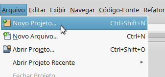
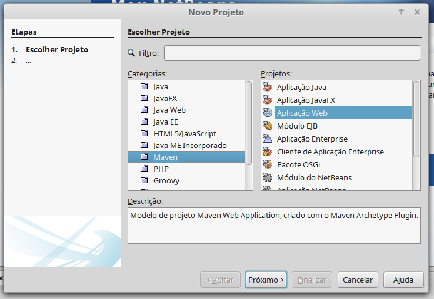
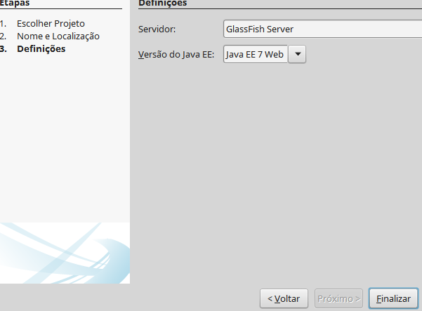

Criando seu Projeto
No canto superior esquerdo expanda o menu Arquivo e selecione a opção Novo Projeto.

Primeira etapa - Escolher Projeto:
Do lado esquerdo da janela clique na Categoria: Maven e no lado direito, em Projeto, selecione Aplicação Web.

Clique em Próximo.
Segunda etapa - Nome e Localização:
Escolha um nome para o seu projeto, sua localização. Id de grupo, Versão e Pacote podem ser customizadas mas isso não afetará o desenvolvimento.

Clique em Próximo.
Terceira etapa - Definições:
Caso nenhum servidor seja exibido você deverá clicar no botão Adicionar.

Selecione GlassFish Server e clique no botão Próximo.

Caso você ja tenha baixado, apenas indique o diretório no qual o GlassFish se encontra.
Senão, faça o download da versão 4.1.
Não utilize a versão 4.1.1.


Nesta etapa não é necessário preenchimento, basta clicar no botão Finalizar.

Clique em Finalizar novamente.

Pronto, seu projeto está criado.